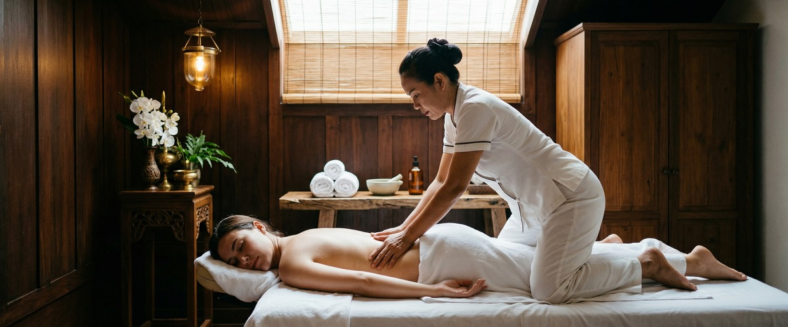
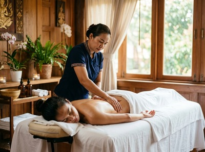

If muscle tension, stress, or poor sleep have been building up, Swedish massage Glasgow is one of the most effective ways to reset your body and mind.

Whether you work long hours in the city or simply need proper time to decompress, this classic full-body treatment is designed to leave you feeling genuinely rested.
Swedish massage uses long, flowing strokes, kneading, rhythmic tapping, and gentle circular motions. Warm oil is applied throughout to soften the muscles and improve circulation.
It is the foundation of Western massage therapy. The aim is to ease tension, reduce muscle tightness, and restore physical ease from head to toe.

At Serendipity Massage Therapy & Wellness, our therapists work at a pressure that suits you. Sessions can stay light and calming or move into more targeted work on areas holding the most tension.
You can book your Swedish massage online and choose the duration that fits your schedule.
Swedish massage suits a wide range of people. It works especially well for anyone who carries everyday stress in their body.
Office workers with neck and upper back tension will benefit. So will people who struggle to switch off at the end of the day.
If you have never tried massage before, this is a great place to start. It is also a natural choice for those returning to regular massage after a break.
Sessions at Serendipity run from 60 to 90 minutes. Before your treatment begins, your therapist will ask about any areas of concern and your preferred pressure.
You will be asked to undress to your comfort level. Towels are used throughout, with only the area being worked on uncovered at any one time.
During the session, your therapist uses warm oil and a mix of long gliding strokes and deeper kneading to release tension. Most clients notice a clear shift in how their body feels by the end.
Afterwards, you may feel deeply relaxed and a little drowsy. That is a sign the treatment has done its job. Book a session at Serendipity to experience it for yourself.
At Serendipity Massage Therapy & Wellness, every Swedish massage is delivered by a trained therapist. Each one uses techniques refined by head therapist Jariya Malone.
Our studio on Hope Street in Glasgow's city centre is built around one principle: every client leaves feeling better than when they arrived.
Most clients undress to their underwear. The treatment covers the full body using massage oil, and you will be covered with towels throughout.
Only the area being worked on is ever uncovered. Undress only to the level you are comfortable with and let your therapist know at the start.
We offer sessions of 60 and 90 minutes. A 60-minute session covers the main areas of tension well, while a 90-minute session allows time to work more fully across the whole body.
We recommend the longer option for first-time visitors or anyone carrying tension in several areas.
Most people feel calm, loose, and noticeably lighter after a session. Some clients feel mildly tired for a few hours — this is a normal response as your nervous system settles.
Drink water after your session to help your body process the treatment. Most people also sleep well that night.
For general wellbeing and stress management, once or twice a month works well. If you have ongoing tension or poor sleep, fortnightly sessions can make a bigger difference.
After your first visit, your therapist can suggest a schedule that fits your needs and lifestyle.
Swedish massage is one of our most accessible treatments. It is a great starting point if you have never had a professional massage before.
The techniques are gentle and the pressure is fully adjustable. Just tell your therapist what you want from the session and they will tailor it to you.
Swedish massage focuses on full-body relaxation, circulation, and general muscle tension. Sports massage targets specific muscle groups using deeper pressure and stretching.
It suits people recovering from training or dealing with a specific muscle problem. Not sure which is right for you? Our team is happy to help before you book.